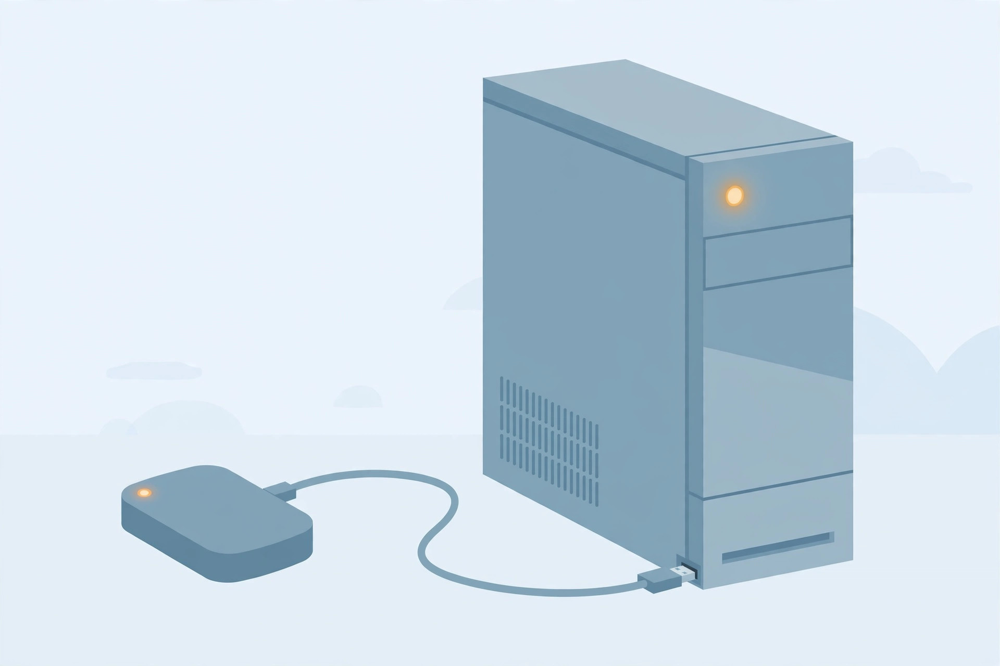

External hard drive not showing up? Fix it by where Windows hides it

A USB external drive that won't appear in File Explorer is almost never dead on arrival — it usually comes down to one of three things: power, a missing drive letter, or a driver problem (AllThings.How). The mistake most fix guides make is listing a dozen steps in a flat pile, with the destructive ones (formatting!) sitting innocently next to the harmless ones. This guide does it differently: answer one branch question — where does Windows see the drive? — then follow only the fix path that matches, in data-safe order.
First: where does Windows see the drive?
Right-click the Start button and choose Disk
Management. Wait a few seconds for the disks to load. The top section
lists volumes (like C:); the bottom shows physical disks labeled
Disk 0, Disk 1, and so on (TechBloat). Now place your drive on this map:
| What you see | Branch | Likely cause |
|---|---|---|
Drive listed, but no letter (no E:, F:…) | A | Missing drive letter |
| Drive listed as Offline, Unallocated, or with an odd file system (RAW) | A | Partition or file-system problem |
| Drive not in Disk Management at all | B | Power, port, cable, or driver issue |
(A side note: a 2TB external may show as roughly 1.81TB — Windows reports capacity differently from drive manufacturers, so that's normal, not a fault (TechBloat).)
The order that protects your data
Before touching anything: if the drive holds files you can't replace, try to
copy them first — as soon as the drive becomes visible, before any
repair step. And never format, initialize, or "clean" a drive that contains data
you want to keep. The diskpart sequence select disk > clean > create
partition > format deletes everything — it is a last resort for blank
or corrupted-beyond-repair drives only (CodingLap).
Branch A: visible in Disk Management
Windows can see the hardware; the problem is the partition, letter, status, or file system (TechBloat). Work through these in order:
- Assign a drive letter. Right-click the drive's partition → Change Drive Letter and Paths → Add → pick a letter (toward the end of the alphabet, like X or Z, to avoid conflicts) → OK. The drive should appear in File Explorer immediately (Acer Community).
- Bring it online. If the disk shows as Offline, right-click the disk itself (left side, "Disk 1") and choose Online.
- Check for file-system errors. If the drive has a letter
but files won't open, run
chkdsk X: /f(your letter) from an admin Command Prompt — file-system corruption can hide a drive's contents even when Windows sees it. - Last resort: repartition. Only if the drive is unallocated or not initialized and holds no data you need: right-click → Initialize Disk, then right-click the unallocated space → New Simple Volume, follow the wizard to create a partition, format it (NTFS), and assign a letter.
Branch B: nowhere to be found
Windows can't see the drive at all. Start with the physical layer — it solves a surprising number of cases (AllThings.How):
- Restart the PC, then plug the drive back in.
- Try a different USB port — rule out a dead or loose port. Use a port directly on the PC, not a hub.
- Try a different cable. A damaged cable can stop a drive from being recognized entirely.
- Check the power. Some externals have a physical power switch or need their own power adapter; 2.5-inch drives on old or weak USB ports may not get enough power — try a powered hub or a different machine (AllThings.How).
- Test on a second computer. If it works there, the problem is your PC, not the drive.
- Reinstall the drivers. Press Win + X → Device Manager → expand Disk drives, right-click the drive → Update driver → Search automatically. If that fails, choose Uninstall device, restart, and reconnect. For stubborn USB issues, do the same under Universal Serial Bus controllers for each USB Root Hub (AppleCorridor; CodingLap).
- Run the hardware troubleshooter. Settings
→ System → Troubleshoot →
Other troubleshooters (AppleCorridor) — or press
Win + R, type
msdt.exe -id DeviceDiagnostic, and run it (CodingLap). - Check the BIOS. Restart and enter the BIOS (F2, F12, Delete or Esc at startup), and confirm USB ports and external storage are enabled under Advanced or Storage settings (AppleCorridor; CodingLap).
What success looks like
The drive appears under This PC in File Explorer with its letter, and you can open it and browse files. That's the check — don't stop at "it shows in Disk Management." Once it's visible, back up anything important immediately. If the drive starts disappearing or throwing errors again, replace it before the next failure rather than repeating the fixes.